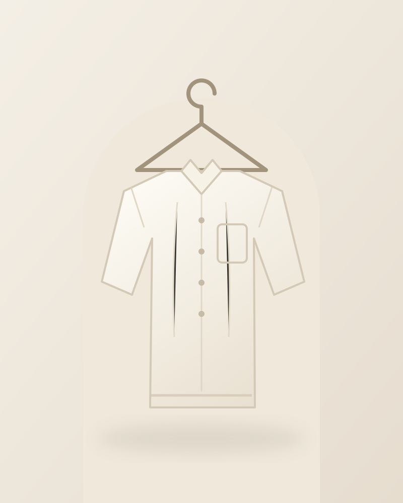
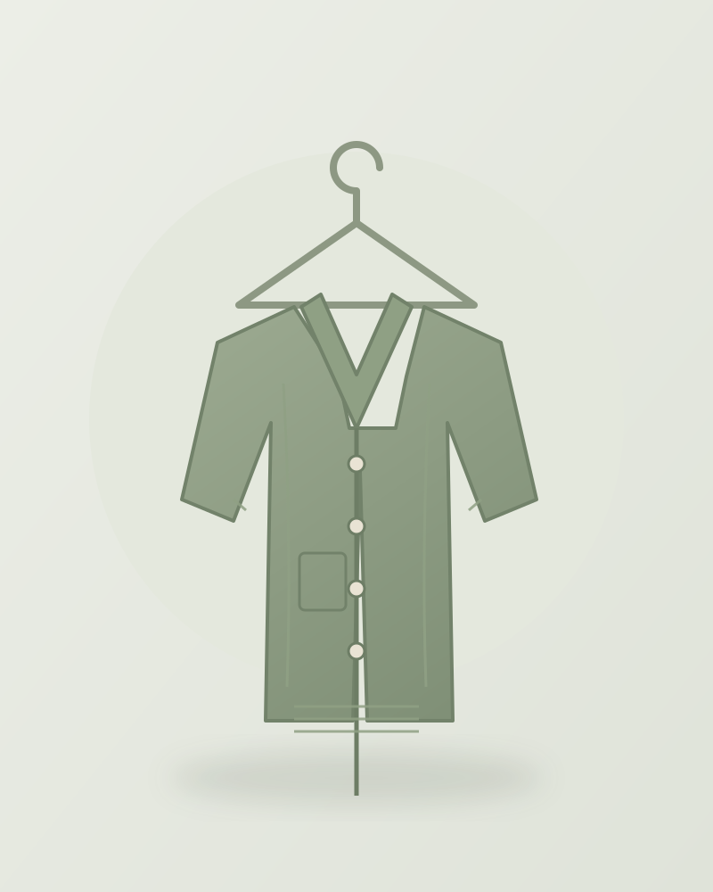
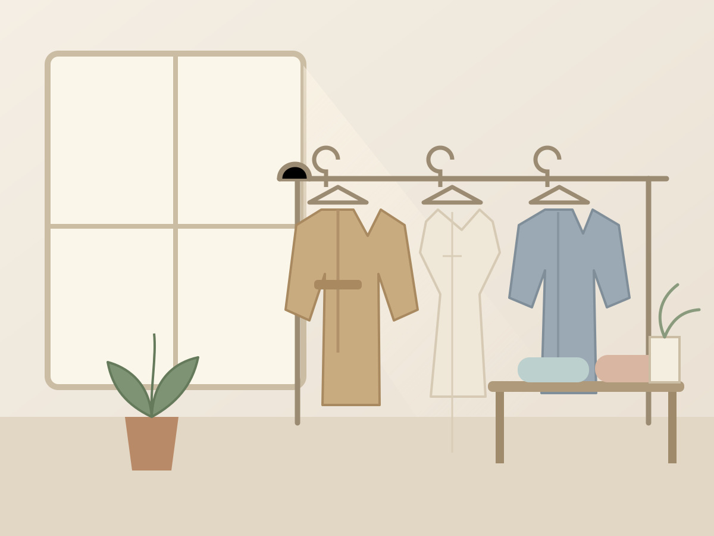

亚麻系列
云白亚麻衬衫
法国诺曼底亚麻，水洗后更柔软，微宽松落肩版型。
¥ 429 ¥ 529
AUTUMN / WINTER 2026 · 拾衣纪
从一块面料的触感开始，挑选能穿很多年的基础款。 本季以亚麻、羊毛与有机棉为主角，用克制的颜色和干净的剪裁， 陪你走过通勤、周末与每一次出发。
01 / 上图下文
图片在上、信息在下，采用 CSS Grid 自适应排列

亚麻系列
法国诺曼底亚麻，水洗后更柔软，微宽松落肩版型。
¥ 429 ¥ 529

羊毛系列
美利奴羊毛混纺，细密罗纹收边，适合早晚温差。
¥ 659 ¥ 799

通勤系列
高腰九分剪裁，垂坠抗皱面料，一条裤子应对整周。
¥ 389

02 / 左图右文
我们与江浙的小型织造工坊长期合作，每季只做少量。 面料进厂后先做缩水与色牢度测试，再交给版师打样三次， 确认肩线、袖长和活动量都舒服，才进入大货生产。
拾衣纪不追逐快速更替的流行，而是把预算放在看得见的细节里： 包边、扣眼、备用扣，以及可以被反复修补的缝份。